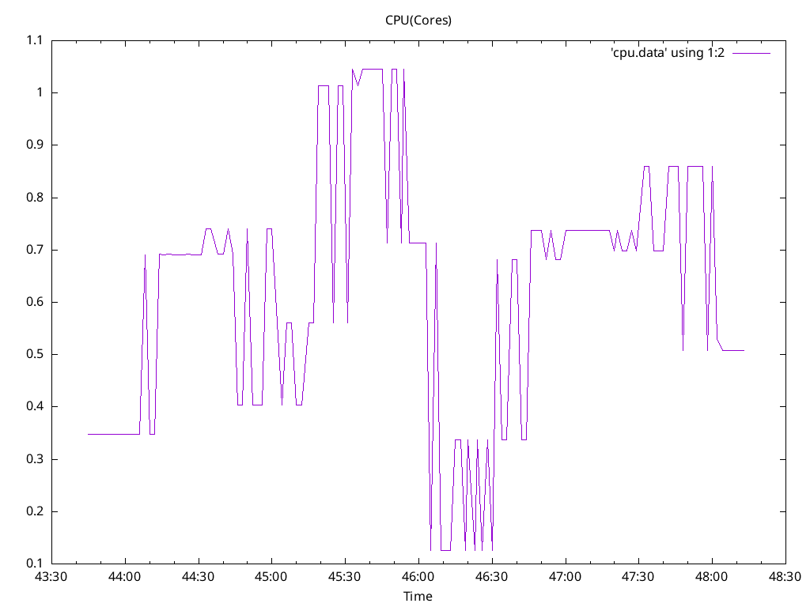
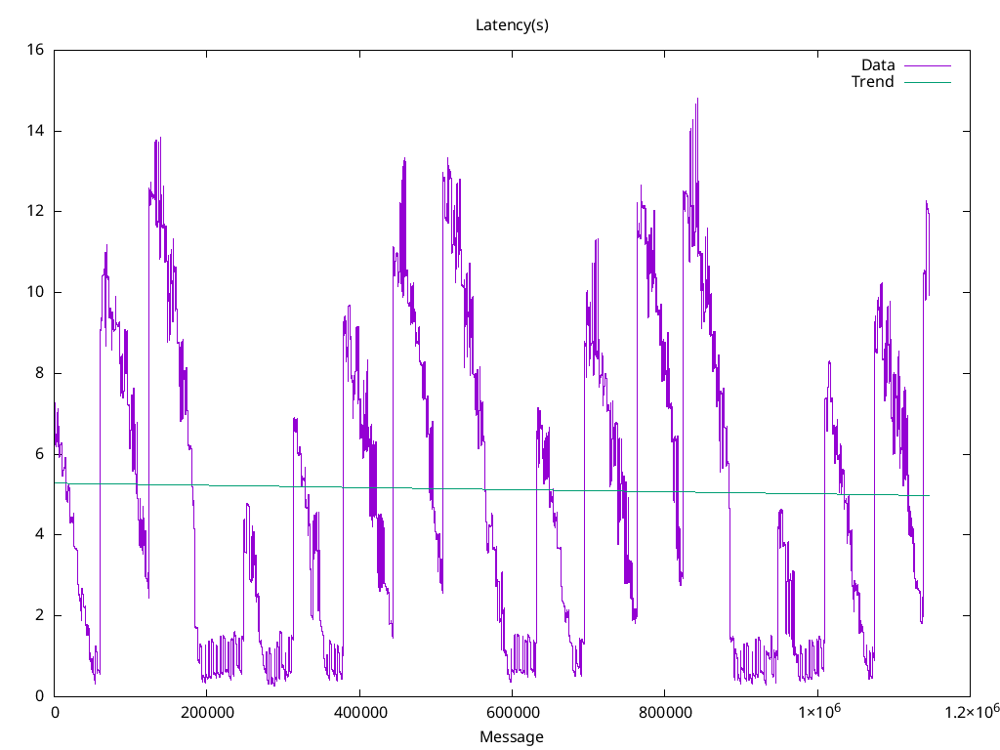
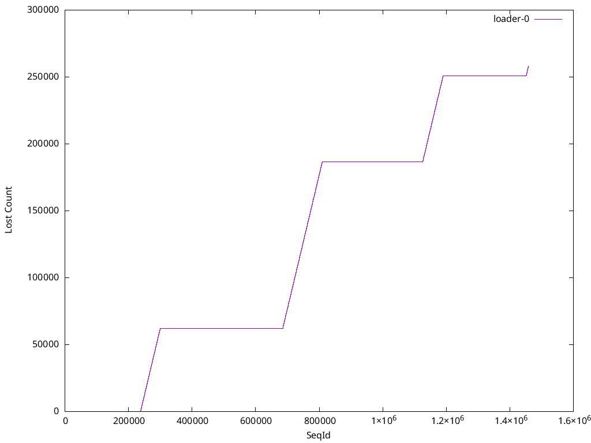

Options

Image: quay.io/openshift-logging/vector:5.9
Total Log Stressors: 1
Lines Per Second: 5000
Run Duration: 5m
Payload Source: synthetic
Latency of logs collected based on the time the log was generated and ingested
| Total | Size | Elapsed | Mean | Min | Max | Median |
|---|---|---|---|---|---|---|
| Msg | (s) | (s) | (s) | (s) | (s) | |
| 1146379 | 1024 | 5m0s | 5.134 | 0.257 | 14.821 | 4.623 |



| Stream | Min Seq | Max Seq | Purged | Collected | Percent Collected |
|---|---|---|---|---|---|
| loader-0 | 54252 | 1458681 | 0 | 1146379 | 81.6% |
expire_metrics_secs = 60
data_dir = "/var/lib/vector/testhack-grctj5aw/instance"
[api]
enabled = true
[sources.internal_metrics]
type = "internal_metrics"
# Logs from containers (including openshift containers)
[sources.input_benchmark_container]
type = "kubernetes_logs"
max_read_bytes = 3145728
glob_minimum_cooldown_ms = 15000
auto_partial_merge = true
include_paths_glob_patterns = ["/var/log/pods/testhack-grctj5aw_*/*/*.log"]
pod_annotation_fields.pod_labels = "kubernetes.labels"
pod_annotation_fields.pod_namespace = "kubernetes.namespace_name"
pod_annotation_fields.pod_annotations = "kubernetes.annotations"
pod_annotation_fields.pod_uid = "kubernetes.pod_id"
pod_annotation_fields.pod_node_name = "hostname"
namespace_annotation_fields.namespace_uid = "kubernetes.namespace_id"
[transforms.input_benchmark_container_viaq]
type = "remap"
inputs = ["input_benchmark_container"]
source = '''
.openshift.cluster_id = "${OPENSHIFT_CLUSTER_ID:-}"
if !exists(.level) {
.level = "default"
if match!(.message, r'Warning|WARN|^W[0-9]+|level=warn|Value:warn|"level":"warn"|<warn>') {
.level = "warn"
} else if match!(.message, r'Error|ERROR|^E[0-9]+|level=error|Value:error|"level":"error"|<error>') {
.level = "error"
} else if match!(.message, r'Critical|CRITICAL|^C[0-9]+|level=critical|Value:critical|"level":"critical"|<critical>') {
.level = "critical"
} else if match!(.message, r'Debug|DEBUG|^D[0-9]+|level=debug|Value:debug|"level":"debug"|<debug>') {
.level = "debug"
} else if match!(.message, r'Notice|NOTICE|^N[0-9]+|level=notice|Value:notice|"level":"notice"|<notice>') {
.level = "notice"
} else if match!(.message, r'Alert|ALERT|^A[0-9]+|level=alert|Value:alert|"level":"alert"|<alert>') {
.level = "alert"
} else if match!(.message, r'Emergency|EMERGENCY|^EM[0-9]+|level=emergency|Value:emergency|"level":"emergency"|<emergency>') {
.level = "emergency"
} else if match!(.message, r'(?i)\b(?:info)\b|^I[0-9]+|level=info|Value:info|"level":"info"|<info>') {
.level = "info"
}
}
pod_name = string!(.kubernetes.pod_name)
if starts_with(pod_name, "eventrouter-") {
parsed, err = parse_json(.message)
if err != null {
log("Unable to process EventRouter log: " + err, level: "info")
} else {
., err = merge(.,parsed)
if err == null && exists(.event) && is_object(.event) {
if exists(.verb) {
.event.verb = .verb
del(.verb)
}
.kubernetes.event = del(.event)
.message = del(.kubernetes.event.message)
set!(., ["@timestamp"], .kubernetes.event.metadata.creationTimestamp)
del(.kubernetes.event.metadata.creationTimestamp)
. = compact(., nullish: true)
} else {
log("Unable to merge EventRouter log message into record: " + err, level: "info")
}
}
}
del(.source_type)
del(.stream)
del(.kubernetes.pod_ips)
del(.kubernetes.node_labels)
del(.timestamp_end)
ts = del(.timestamp); if !exists(."@timestamp") {."@timestamp" = ts}
'''
# Set log_type
[transforms.input_benchmark_viaq_logtype]
type = "remap"
inputs = ["input_benchmark_container_viaq"]
source = '''
.log_type = "application"
'''
[transforms.output_http_normalize]
type = "remap"
inputs = ["input_benchmark_viaq_logtype"]
source = '''
del(.file)
'''
[transforms.output_http_dedot]
type = "remap"
inputs = ["output_http_normalize"]
source = '''
.openshift.sequence = to_unix_timestamp(now(), unit: "nanoseconds")
if exists(.kubernetes.namespace_labels) {
for_each(object!(.kubernetes.namespace_labels)) -> |key,value| {
newkey = replace(key, r'[\./]', "_")
.kubernetes.namespace_labels = set!(.kubernetes.namespace_labels,[newkey],value)
if newkey != key {
.kubernetes.namespace_labels = remove!(.kubernetes.namespace_labels,[key],true)
}
}
}
if exists(.kubernetes.labels) {
for_each(object!(.kubernetes.labels)) -> |key,value| {
newkey = replace(key, r'[\./]', "_")
.kubernetes.labels = set!(.kubernetes.labels,[newkey],value)
if newkey != key {
.kubernetes.labels = remove!(.kubernetes.labels,[key],true)
}
}
}
'''
[sinks.output_http]
type = "http"
inputs = ["output_http_dedot"]
uri = "http://localhost:8090"
method = "post"
[sinks.output_http.encoding]
codec = "json"
[transforms.add_nodename_to_metric]
type = "remap"
inputs = ["internal_metrics"]
source = '''
.tags.hostname = get_env_var!("VECTOR_SELF_NODE_NAME")
'''